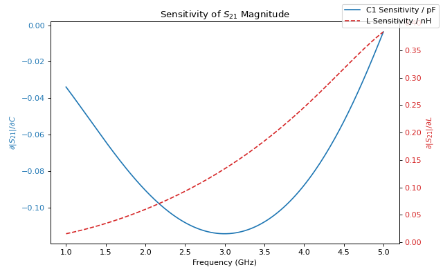

Automatic Differentiation
ParamRF is built on JAX and Equinox, making models natively differentiable. This allows for analytical gradients of circuit responses with respect to component values, avoiding the need for numerical approximations. These gradients can be interpreted, for example, as the sensitivities of a given response to specific components. In this example, we compute these sensitivities for a CLC low-pass filter across frequency.
Computing Parameter Sensitivities
First, let’s set up a low-pass filter model which we want to take derivatives with respect to:
from pmrf.models import ShuntCapacitor, Inductor, Cascade
c1 = ShuntCapacitor(C=1.0e-12)
l1 = Inductor(L=1.0e-9)
c2 = ShuntCapacitor(C=1.0e-12)
lpf = Cascade([c1, l1, c2])
To differentiate a model’s parameters, we must define a pure function that returns a scalar metric (e.g., insertion loss). We use equinox.filter_grad() to compute derivatives for the parameters within the model tree:
import pmrf as prf
import equinox as eqx
freq = prf.Frequency(2.4, 2.4, 1, 'GHz')
def s21_mag(model):
return model.s_mag(freq)[0,1,0]
grad_fn = eqx.filter_grad(s21_mag)
sensitivities = grad_fn(prf.unwrap(lpf))
print(f"Sensitivity to C1: {sensitivities.models[0].C * 1e-12:.3f} / pF")
print(f"Sensitivity to L: {sensitivities.models[1].L * 1e-9:.3f} / nH")
Output:
Sensitivity to C1: -0.106 / pF
Sensitivity to L: 0.086 / nH
Note that we had to manually “unwrap” our model before taking gradients in this manner. This is because all parameters in ParamRF are wrappers around raw JAX arrays, and we want to take derivatives with respect to their physical parameter values, and not the raw, underlying optimizer values. (For other tasks in ParamRF, like optimization and inference, this is often done automatically).
Broadcasting Sensitivities Across a Band
To evaluate sensitivity across a frequency band, JAX’s reverse-mode Jacobian function jax.jacrev() can be used, which computes the derivative of an S-parameter array with respect to specific inputs:
import jax
import matplotlib.pyplot as plt
band = prf.Frequency(1, 5, 201, 'GHz')
def s21_mag_array(c1_val, l_val):
model = ShuntCapacitor(C=c1_val) ** Inductor(L=l_val) ** ShuntCapacitor(C=1.0e-12)
return model.s_mag(band)[:,1,0]
jacobian_fn = jax.jacrev(s21_mag_array, argnums=(0, 1))
c_nom, l_nom = 1.0e-12, 1.0e-9
ds21_dc, ds21_dl = jacobian_fn(c_nom, l_nom)
We can plot the results as a function of frequency to visualize their behaviour:
fig, ax1 = plt.subplots(figsize=(8, 5))
ax1.plot(band.f_scaled, ds21_dc * 1e-12, color='tab:blue', label='C1 Sensitivity / pF')
ax1.set_xlabel('Frequency (GHz)')
ax1.set_ylabel(r'$\partial |S_{21}| / \partial C$', color='tab:blue')
ax1.tick_params(axis='y', labelcolor='tab:blue')
ax2 = ax1.twinx()
ax2.plot(band.f_scaled, ds21_dl * 1e-9, color='tab:red', linestyle='--', label='L Sensitivity / nH')
ax2.set_ylabel(r'$\partial |S_{21}| / \partial L$', color='tab:red')
ax2.tick_params(axis='y', labelcolor='tab:red')
plt.title('Sensitivity of $S_{21}$ Magnitude')
fig.legend()
fig.tight_layout()
